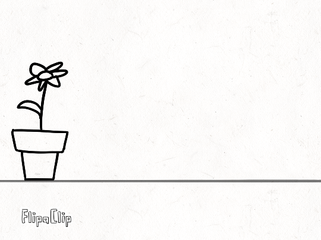
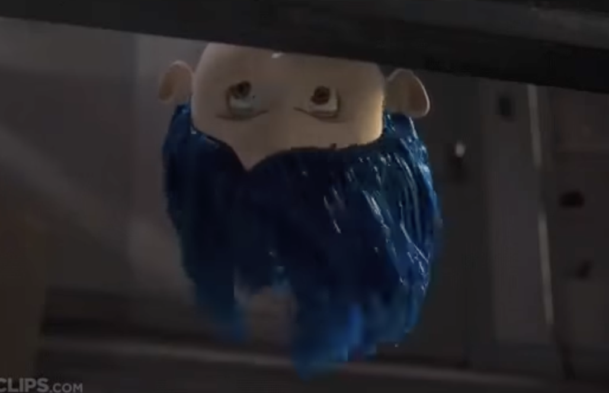

Overlapping
Overlapping action consists of the movement tied to other moving objects as they start, travel, and stop. For example, when a person wears a necklace and starts running and suddenly stops, the necklace would move as well until it stops completely with the person. Adding overlapping action can add a more realistic effect to animation.

We can see in this picture how when the pot moves, the flower attached to it is forced out of rest and gets curled to the left by the speed of the pot. When the pot comes to a sudden stop, the flower swings for a few frames until it goes back to rest. This is known as overlapping.

Click in the image to see example. In this scene, the character is moving her head down to look at something. We can see the hair moving until the head comes for a stop, but as the head is upside down, the hair is hanging by the force of gravity. Animating things according to gravity is also important as it achieves a more realistic effect.